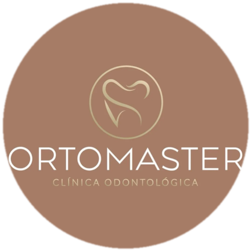

OrtoMaster
Clínica Odontológica — Euclides da Cunha, BA
Problema
A equipe da OrtoMaster gastava boa parte do dia respondendo WhatsApp manualmente — triando pacientes, explicando procedimentos e marcando consulta — um trabalho repetitivo que tomava tempo do atendimento presencial.
Solução
Criamos a Meury, uma recepcionista virtual com IA que atende o WhatsApp da clínica 24 horas por dia: entende o que o paciente precisa, explica os procedimentos e agenda a consulta sozinha, sem perder a qualidade humana da conversa.
O que a Meury faz
Entende o paciente
Reconhece até gírias e termos populares (como "chumbar o dente") e identifica o procedimento certo, sem precisar de termo técnico.
Agenda sozinha
Verifica a agenda de cada profissional e marca a consulta automaticamente, respeitando a duração de cada procedimento.
Tira dúvidas
Responde sobre preço, horário de funcionamento, formas de pagamento e detalhes de cada procedimento.
Sabe quando chamar um humano
Encaminha pra equipe da clínica os casos que pedem atenção especial, como procedimentos mais complexos.
Resultado
Uma recepcionista de WhatsApp que atende 24 horas por dia, entende a linguagem informal do paciente e agenda consultas sem errar horário — liberando a equipe da OrtoMaster pra focar no atendimento presencial.
O que também podemos oferecer
Com o atendimento automatizado, esses serviços ajudam a trazer mais gente pra conversar com a Meury.
Site institucional
Uma landing page profissional pra reforçar a credibilidade da clínica online.
Gestão de redes sociais
Conteúdo e presença ativa no Instagram pra atrair e fidelizar pacientes.
Tráfego pago
Anúncios segmentados pra região, atraindo pacientes prontos pra agendar.
SEO local
Aparecer melhor no Google e no Google Meu Negócio pra quem busca na região.
Quer um case parecido com esse pro seu negócio?
Sem compromisso, sem pressão. É só bater um papo pra entender onde a tecnologia pode ajudar você.
Falar no WhatsApp